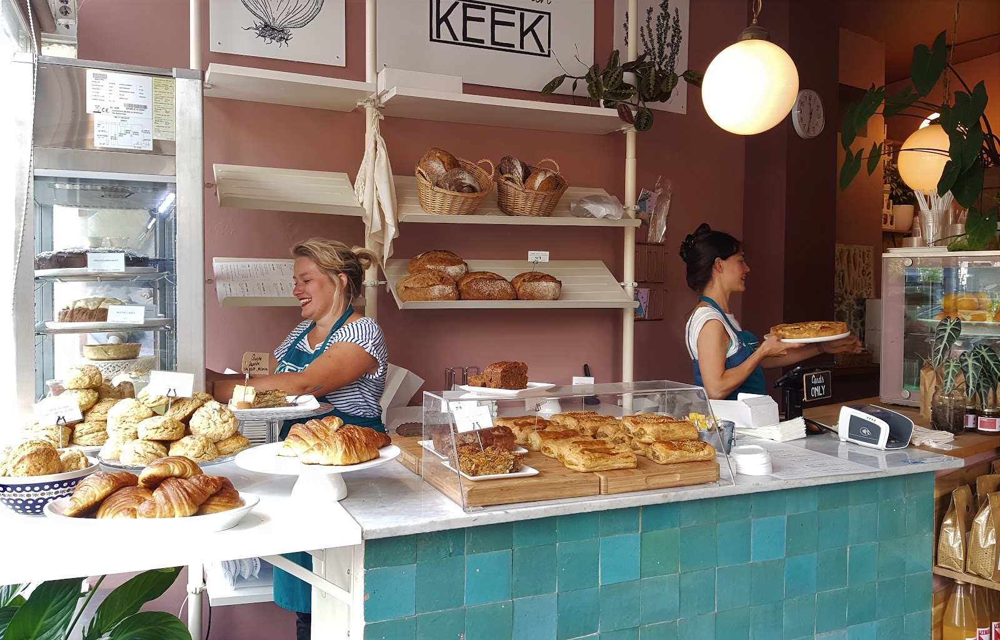
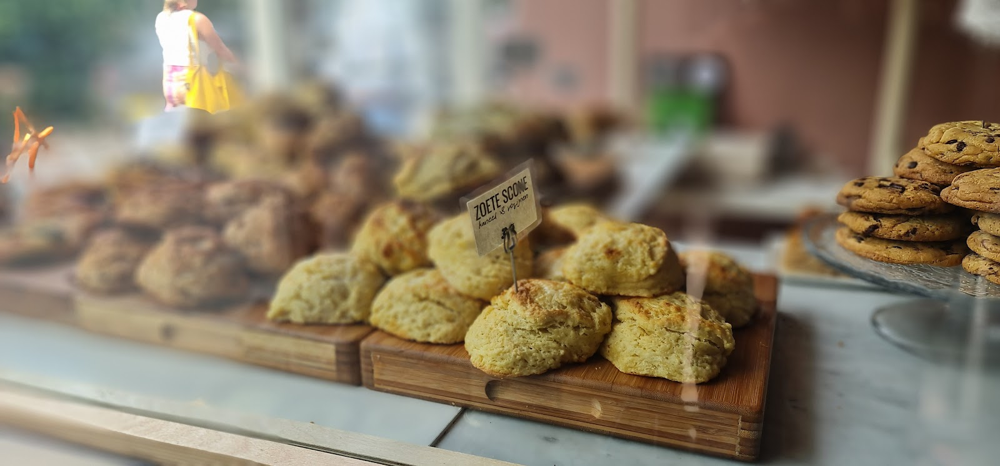
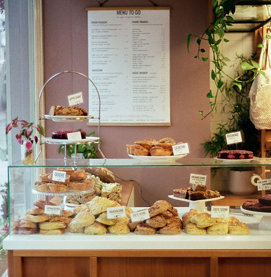
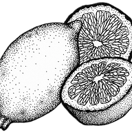
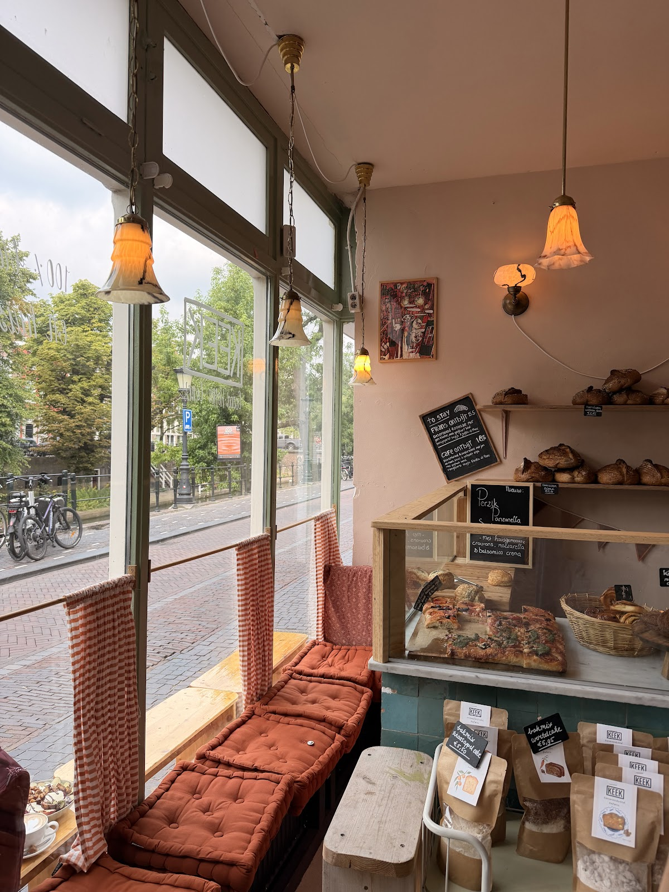
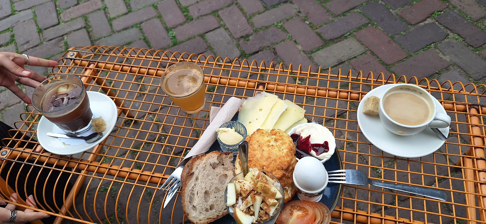
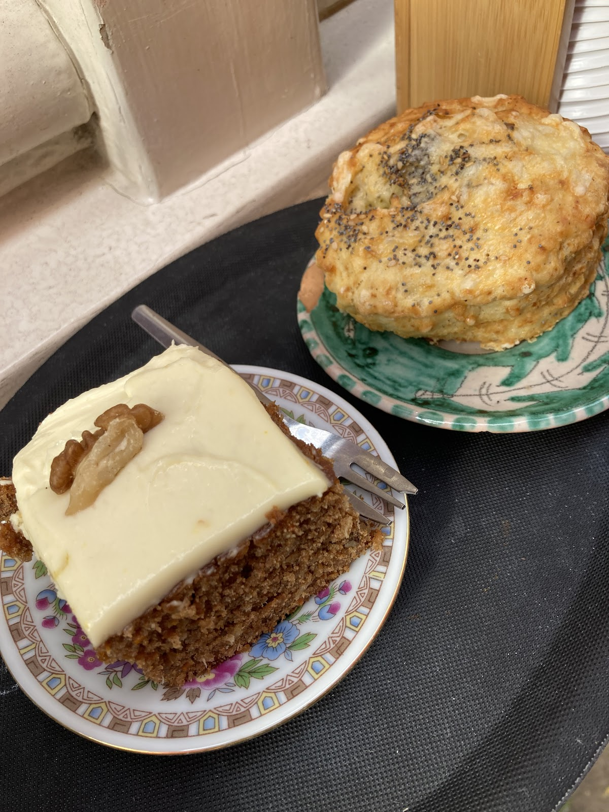
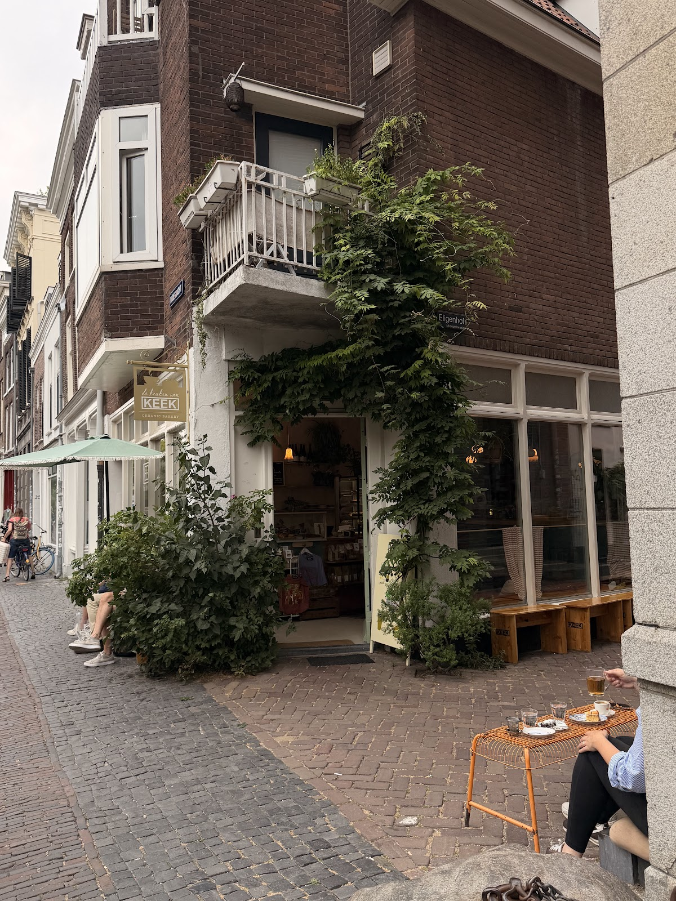

Biologische bakkerswinkel in Utrecht
Hier fiets je niet zomaar voorbij.
Brood, croissants en scones uit onze eigen bakkerij, plus koffie en taart. Aan de Oudegracht, elke dag open vanaf half negen.
4,5 op Google, uit 389 reviews

Kies maar uit de vitrine.
De meeste lekkernijen kies je zelf, vers uit ons wisselende bakkersassortiment. Neem iets mee to go of blijf even. Alles is biologisch en komt uit onze eigen bakkerij.
- Desembrood
- Croissants
- Zoete sconeskaneel & rozijnen
- Hartige scones
- Focaccia
- Quiche
- Taart
- Soep
- Sapjes


Ons assortiment wisselt. Benieuwd wat er nu ligt? Bel even, dan kijken we voor je.

Onze broden, croissants, focaccia's en scones bakken we zelf, op zonne-energie en met alleen biologische ingrediënten. De taarten, soep, quiches en veel beleg maken we ook zelf.

Of ga even zitten.
In en rond ons pand staan bankjes om even neer te strijken. Voor een kop koffie, of van de ontbijt- en lunchkaart.
We zijn een laptopvrije winkel. Dat komt de gezelligheid alleen maar ten goede.

"Zo'n heerlijke producten hebben ze er. Zelf ben ik gek op hun croissants, een ware traktatie en niet te vergelijken met andere bakkers. En hun zoete scones😋 omg...zo heerlijk. Het is wel prijzig maar je krijgt echt waar voor je geld. De sfeer is gezellig. Aardig personeel."
"Super fijne plek. Heerlijk eten en drinken ook. Kom er vaak en graag. 😀"
Gemiddeld 4,5 sterren uit 389 reviews op Google.
Iets te vieren?
Bestel een taart voor je verjaardag. Bel of mail de winkel, dan regelen we het. Liever online bestellen? Dat kan ook, dan haal je het op bij onze bakkerij aan de Springweg 16.

Kom langs op de Oudegracht.

Ook van KEEK in de stad
Bakkerij, Springweg 16. Hier kun je letterlijk een kijkje in de keuken nemen, en is er elke ochtend brood vers uit de oven. 030 227 0492
Café, Twijnstraat 23. Voor eerlijke koffie, huisgemaakte taart en een lunch. 030 233 3299